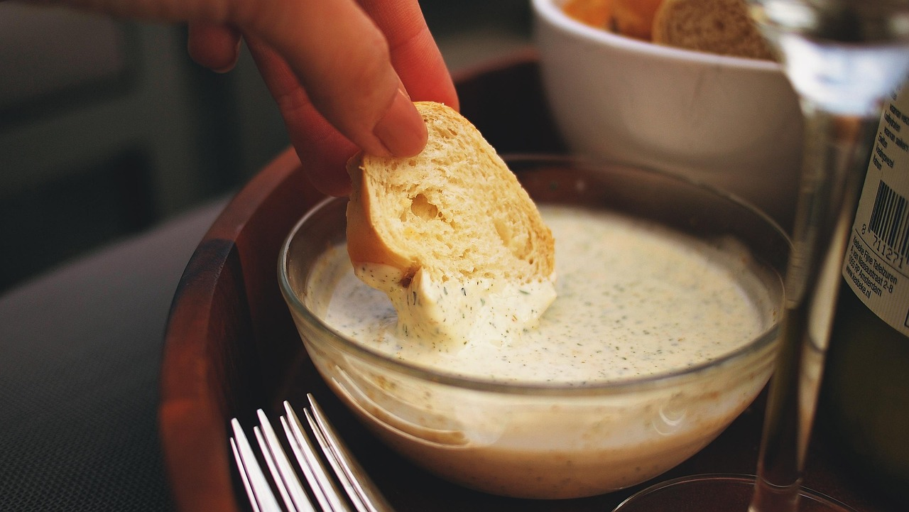

Diese leichte Aioli ist die perfekte Alternative zur klassischen Variante. Sie überzeugt mit cremiger Konsistenz und intensivem Knoblauchgeschmack, enthält jedoch weniger Fett und wirkt angenehm frisch. Ideal als Dip zu Gemüse, Brot oder als Sauce zu Grillgerichten – schnell zubereitet und voller Geschmack bei weniger Kalorien.

Möhreneintopf

Palatschinken

Zimtschnecken
Kochen ist mehr als nur die Zubereitung von Essen – es ist ein kreativer Ausgleich im Alltag. Mit einfachen Zutaten lassen sich leckere Gerichte zaubern, die nicht nur satt machen, sondern auch Freude bereiten. Ob alleine oder gemeinsam: Selbst zu kochen schafft besondere Momente und bringt Genuss direkt auf den Teller.